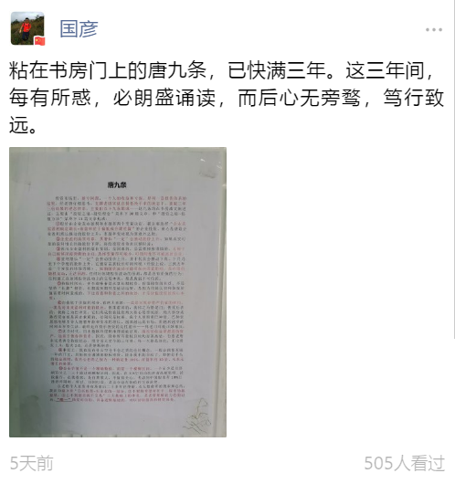

1500字，概括老唐投资体系的理念核心
来源:
唐书房
发布时间:
2020-10-13
原文链接:
https://mp.weixin.qq.com/s/aashqGYsg7hyoLnVuz5Ujg
几天前，书房读者
@
国彦 发帖展示他摘抄并贴在书房门上的“唐九条”——这名儿听着官味十足，有点狐假虎威的赶脚

内容摘自老唐
2017
年
11
月的一篇文章
《三年三倍的背后》
。
三年后回看该文，发现当时写的挺完整的，这九条内容基本就是老唐整个投资体系的理念核心。
书房的其他理念类文章，只能算是变着花样，从不同角度、在不同市场状况下，对这九条内容的反复阐述。
今天单独将其摘出来重发一次，方便收录于书房底部菜单栏的“核心五篇”。
备注：由于公众号底部菜单栏只能放置五个子菜单，所以我选择将核心五篇里的
《避雷要诀》
替换掉。
需要阅读
《避雷要诀》
时，请向书房发送“避雷”提取。
谢谢@国彦 帮我勾起这篇文章
。之下为原文。
****************************
投资市场里，盈亏同源，一个人的收益和亏损，是同一套投资体系的结果。
经老唐仔细思考，支撑老唐实盘在极低换手率的状态下，获取三年三倍结果的理念体系，主要由以下九条组成：
①股价由企业真实盈利和市盈率两个变量决定，我主要选择“企业真实盈利确定增长+市盈率位于偏低或合理位置”的企业投资。
重心是获取企业盈利增长推动的股价上升，市盈率变动视为算意外之财；
②企业盈利真实可靠，其增长“一定”会推动股价上升。
如果真实可靠的盈利增长伴随股价下降，将给投资者带来巨额财富；
③做出企业盈利的增长预测，是困难的，是需要极度谨慎的。
扎根于自己能够深度理解的企业，选择变量尽可能少，可预测性尽可能高的企业；
④盈利增长“一定”会推动股价上升，并不代表会推动下周、下月乃至下个季度的股价上升。
它通常需要较长时间体现，经验上说，三到五年是一个常见的体现周期。
短期股价波动可能受任何因素影响，是市场的随机运动，无法预测。
任何对短期股价波动的预测，都是没有价值的行为；
任何建立在短期股价波动上的交易体系，都是脆弱不可信的；
⑤持股时间长，并不意味着是从事长期投资。
价值投资的本质，不是坚持“长期”投资。
长期或短期只是被动结果，是因为市场认识和体现价值需要时间造成的。
下注市值和价值之间的收敛，才是价值投资的核心本质；
⑥市值低于价值的部分，有两大来源：一类是对现存资产价值的折扣，一类是对未来盈利可能的低估。
侧重前者的，我称之为格老门；侧重后者的，我称之为巴神堂，它们构成价值投资两大核心思想流派。
绝大部分成熟投资者都是两者兼顾的，差别只是权重。
我个人更侧重巴神堂，巴神堂思想能够引导人随着年龄和资本的增长，越来越远离市场，用越来越多的时间去享受生活，最终走向快乐投资的良性循环
——格老门可能正好相反；
⑦法币时代，历史数据和逻辑推理都能证明，股权是收益率最高的资产，远高于债券和货币。
因而，除非所有股权目标均显著高估，否则老唐永远是满仓持股状态。
组合设立至今的三年里，每一天都是如此，无论股灾
1.0，股灾2.0，还是熔断崩盘；
⑧事实上，我也没有什么空仓半仓之类的仓位概念，一般会预留家庭一年的开支，其他部分通通做股权投资，除非找不到目标了。
即便是手头的现金理财，我内心也将之视为一种确定性
100%、市盈率约30倍、未来无增长的股票；
⑨企业价值不是一个精确数值，而是一个模糊区间，一个至少足以容纳百分之二三十波动的模糊区间。
因此，在
30%空间内的所谓高抛低吸、波段操作，在我看来，是自欺欺人，不值得关心。
考虑到中国股市有
10%日涨跌停限制，所以，日间盯盘，是完全没有价值的生命浪费。
三年的公开数据还不够长，而且老唐的运气似乎一贯不错，所以，三年三倍的成绩里面，究竟有多少是投资体系的功劳，有多少是运气的体现，可能还需要更长时间去观察。
此处只能借机说点个人思考和观察：
以老唐个人在资本市场前后二十多年的傻碰，及无数前辈的摸索和总结，我认为建立在
“
①买股票=买企业的一部分，②不要将希望寄托于二级市场接盘侠，③占不到便宜就不交易
”三大基础上的体系，
是老唐理解能力范围以内，
“唯一”
稳妥可信的、具备逻辑基础的、可以持续盈利的投资体系。
这条路已经有无数前辈走通过，踏平过。路边留下了无数的方向标、指示牌、陷阱提醒。
如果你的目标是财富增长，老唐强烈建议不要浪费生命探索和碰壁，不要试图重新发明车轮，只需要老老实实地沿着前辈们踩出来的路前行即可。
要创新，要建立新体系，可以留待身家突破
10位数以后考虑。